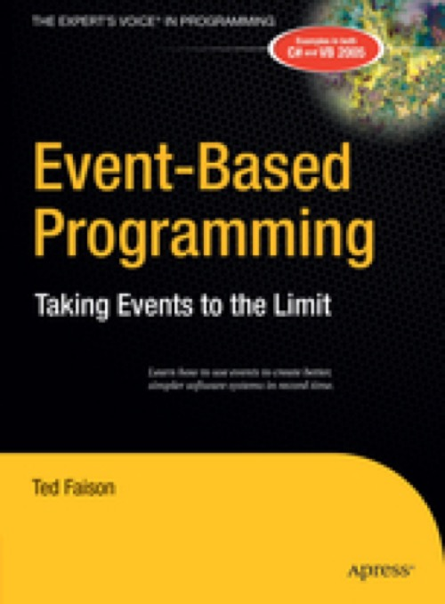

Event-Based Programming
Published by : Apress
Writed by : Ted Faison
Published date : 16/11/2014
ISBN-13 : 9781430211938
Language :  English
English
Web site : https://www.apress.com/fr/book/9781590596432
About Event-Based Programming
Languages like C#, VB .NET, and Delphi include built-in support for events, and these events become very powerful when they connect the objects and components of a system. Events make it possible for such parts to interact without any coupling. And the resulting parts can be developed and tested individuallywhich keeps the code clean and simple.
Component-based development (CBD) is an extension of object-oriented programming. CBD does away with the language and vendor-specific limitations of OOP, makes software reuse more practical and accelerates the development process. Event-based programming is the next logical step in CBD, and makes components more reusable due to their decoupled nature. But event-based systems are easier to develop, which means they're cheaper and more reliable than traditional OOP or CBD systems.
This book teaches you how to develop software based on parts that interact primarily through an event mechanism. You'll learn how to use events in many different situations, to solve recurring development problems without coupling. The book introduces Signal Wiring Diagram, a novel form of software diagram similar to the circuit diagrams used by hardware designers. The book concludes with a series of case studies, incorporating all featured concepts. In a nutshell, you'll want to pick up a copy of this book because it
How to use an event-based paradigm to reduce or completely eliminate coupling between classes and components
Describes components, including coordinators, workers, builders, binders, and routers
Three complete case studies that model concepts being used to design small, medium, and large systems
Where to buy ?
This book has the ISBN13 "9781430211938".
If it is still available for sale, you can order it in your favorite bookstore, by its publisher or online at
Amazon CA,
Amazon FR,
Amazon JP,
Amazon UK or
Amazon USA depending on your country.